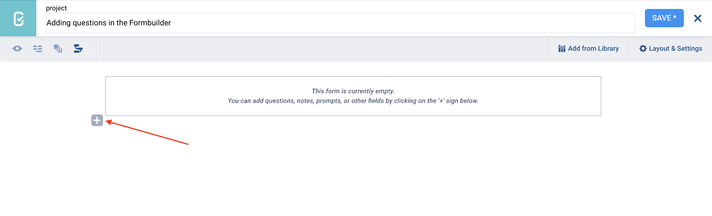
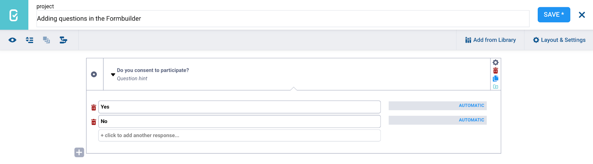

Parcourez la base de connaissances, explorez nos ressources et visitez notre Forum communautaire pour des informations plus détaillées
Dernière mise à jour : 20 Mar 2026
L’interface de création de formulaires KoboToolbox (KoboToolbox Formbuilder) vous permet d’ajouter facilement des questions à votre formulaire au fur et à mesure que vous construisez votre enquête ou questionnaire.
Cet article explique comment ajouter des questions à votre formulaire, définir des choix de réponse le cas échéant, et présente un aperçu des types de questions disponibles dans le Formbuilder pour vous aider à concevoir des formulaires efficaces.
Pour ajouter une question à votre formulaire :
Cliquez sur le bouton .
Saisissez le libellé de votre question.
Cliquez sur + ADD QUESTION.
Choisissez le type de question.

Note : Une fois le type de question sélectionné, il ne peut pas être modifié dans le Formbuilder. Pour changer le type d'une question existante, supprimez la question et créez-en une nouvelle avec le même libellé.
Après avoir ajouté une question à votre formulaire, il est fortement recommandé de définir un nom du champ dans les Paramètres de la question. Le nom du champ est utilisé pour identifier la question dans la logique du formulaire et dans le jeu de données exporté.
Par défaut, KoboToolbox crée le nom du champ automatiquement en supprimant les espaces et les majuscules du libellé de la question. Par exemple, si le libellé de la question est « Nom du répondant », le nom du champ sera respondent_name.
Pour en savoir plus sur les noms de champs, consultez l'article Options de questions dans le Formbuilder.
Lorsque vous ajoutez des questions de type Choix unique ou Choix multiple à votre formulaire, vous serez invité à saisir des choix de réponse.
Vous pouvez saisir autant de choix de réponse que vous le souhaitez.
Pour réorganiser la liste des choix, cliquez sur un élément et faites-le glisser vers la position souhaitée.
Cliquez sur l’icône de corbeille à côté d’un libellé de choix pour le supprimer.

Note : La gestion de longues listes de choix dans le Formbuilder peut prendre beaucoup de temps. Si votre formulaire comprend de nombreuses options ou si la même liste de choix est utilisée dans plusieurs questions, il est souvent plus simple de créer et de gérer ces listes avec XLSForm. Pour en savoir plus, consultez l'article Gérer les choix de réponse dans XLSForm.
À côté de chaque choix de réponse, vous verrez un champ intitulé AUTOMATIC. Ce champ contient la valeur XML de cette option.
La valeur XML est un nom interne court que KoboToolbox utilise pour enregistrer et identifier l’option sélectionnée dans vos données. Par défaut, KoboToolbox crée la valeur XML automatiquement en supprimant les espaces et les majuscules du libellé de l’option. Par exemple, si le libellé de l’option est « Option 1 », la valeur XML sera option_1.
Dans certains cas, vous pouvez souhaiter définir votre propre valeur XML. Cela peut être utile si le libellé de l’option est très long ou si vous souhaitez utiliser un nom plus clair ou plus cohérent. Pour ce faire, cliquez sur AUTOMATIC et remplacez-le par votre propre valeur personnalisée.
Note : Il est fortement recommandé de définir des valeurs XML pour tous les choix lorsque vous utilisez des scripts non latins, tels que le chinois, l'arabe ou le népalais, afin de garantir que vos données sont correctement enregistrées et exportées.
Les types de questions suivants sont disponibles dans le Formbuilder :
Type de question |
Description |
|---|---|
Choix unique |
Permet aux répondants de sélectionner une option dans une liste prédéfinie. |
Choix multiple |
Permet aux répondants de sélectionner plusieurs options dans une liste prédéfinie. |
Texte |
Fournit une zone de texte pour recueillir des réponses ouvertes. |
Chiffre |
Permet aux répondants de saisir des nombres entiers. |
Décimale |
Permet aux répondants de saisir des nombres pouvant contenir des décimales. |
Date |
Capture une date calendaire précise, incluant l’année, le mois et le jour. |
Heure |
Capture une heure précise en heures et minutes. |
Date et heure |
Capture à la fois une date et une heure dans une réponse combinée. |
Position |
Enregistre une localisation GPS unique. |
Ligne |
Enregistre plusieurs points GPS formant une ligne. |
Zone |
Enregistre plusieurs points GPS formant une zone délimitée. |
Photographie |
Permet aux répondants d”importer des images ou de prendre des photos (lors de l’utilisation de l”application KoboCollect). |
Audio |
Permet aux répondants d”importer un fichier audio ou d’enregistrer un audio. |
Vidéo |
Permet aux répondants d”importer des vidéos ou d’enregistrer des vidéos (lors de l’utilisation de l”application KoboCollect). |
Code-barres / code QR |
Scanne un code QR pour collecter les informations intégrées à l’aide de la caméra de l’appareil (lors de l’utilisation de l”application KoboCollect). |
Fichier |
Permet aux répondants d”importer des fichiers, tels que des fichiers texte, des tableurs et des fichiers PDF. |
Note |
Fournit des informations au répondant sans nécessiter de saisie. |
Consentement |
Une case à cocher unique que les répondants peuvent sélectionner pour confirmer leur accord avec une déclaration. |
Notation |
Permet aux répondants d”évaluer différents éléments à l’aide d’une échelle commune. |
Tableau de questions |
Crée un groupe de questions affichées dans un format de tableau, où chaque cellule représente une question distincte. |
Classement |
Permet aux répondants de classer des éléments par ordre de préférence. |
Calcul |
Effectue automatiquement des calculs dans un formulaire en fonction des réponses aux questions précédentes. |
Caché |
Stocke des valeurs prédéfinies qui ne sont pas visibles par le répondant. |
Intervalle |
Permet aux répondants de sélectionner une valeur numérique dans une plage définie. |
XML externe |
Connecte le projet KoboToolbox à d’autres projets afin de récupérer des données de manière dynamique. |
Choix unique à partir d’un fichier |
Permet aux répondants de sélectionner une option dans une liste prédéfinie stockée dans un fichier CSV externe. |
Sélectionner plusieurs dans le fichier |
Permet aux répondants de sélectionner plusieurs options dans une liste prédéfinie stockée dans un fichier CSV externe. |
Note : Les types de questions Choix unique à partir d'un fichier et Sélectionner plusieurs dans le fichier n'apparaissent comme options dans le Formbuilder que si un fichier de choix externe a été importé dans KoboToolbox.
Avez-vous trouvé ce que vous cherchiez ? La traduction était-elle claire ? Manquait-il quelque chose ?
Partagez vos commentaires pour nous aider à améliorer cet article !
KoboToolbox est maintenu par Kobo Inc.